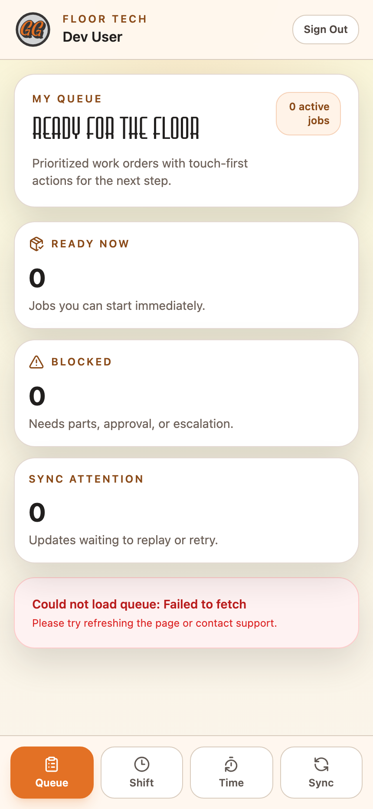

For technicians executing work on the shop floor.
Live URL: https://floor.golfingarage.m4nos.com — open it on the bay tablet or your phone.
Clock in on the Shift tab. Pull the top card on Queue. Check off tasks as you do them; tap Time to start the timer. If you're stuck, tap Mark blocked and pick a reason. Everything works offline — the Sync tab catches you up when Wi-Fi comes back.
You're a floor tech. You work in gloves, often away from Wi-Fi, often on a shared tablet at the bay. This app is built for that:
Anything beyond execution (creating work orders, assigning techs, parts ordering, reporting) lives in the main ERP — that's your shop manager's world.
@golfingarage.com email, tap Continue. You're sent to Google, authenticate once, and you're back.If someone else is already clocked in on the tablet, tap Switch Device User to swap — this clocks them out.

| Tab | What you do here |
|---|---|
| Queue | See and open your assigned work orders. |
| Shift | Clock in/out, availability, switch device user. |
| Time | Start/stop the timer, view today's entries. |
| Sync | Review and replay offline updates. |
Your current tab is highlighted orange.
Across the top you'll see the Offline Queue Banner:
Tap Queue. You see cards for each work order assigned to you. Each card shows:
#1620 — Pier Motorsports lift kit install)0 ↻, 1 ↻, 3+ ↻ — how many times this has come backAt the top you also see quick stats: Ready now, Blocked, Sync attention.
Tap any card to open the work order detail.
This is where you spend most of your day.
The heart of the page. Each line is a task. Tap the checkbox to mark it done — it updates immediately, even offline. A small badge shows the sync status for each toggle.
Tasks you can't do yet are greyed out (prerequisite not met).
Scroll to the Notes section. Type a note for the next tech, the parts team, or dispatch — whoever will read this WO next. Tap Save. Your note appears inline with a PENDING badge until it syncs.
Notes persist across shifts. A later tech picking up the WO sees everything you wrote.
Under any task that supports it, tap the 📷 Upload slot. On mobile this opens the camera directly; on a tablet it offers file-picker. Take/pick a photo → it attaches to the WO with a PENDING badge.
Use for:
Photos live offline until you sync — safe to take them away from Wi-Fi.
If you open a WO and realize you need a part that isn't reserved, tap Request Parts (at the bottom). Pick the part(s) and quantity; parts manager sees it in their queue.
Top-right of the WO detail: Mark Blocked button. Tap it → a dialog asks for:
PARTS_MISSING — you need something not on the shelfWAITING_MANAGER — need a decisionTOOLING_ISSUE — missing/broken toolCUSTOMER_HOLD — customer asked to pauseSAFETY_CONCERN — something unsafeOTHERTap Block. The WO status changes to BLOCKED; it leaves your queue and appears on the shop manager's Open/Blocked screen with your note attached.
Check off the final checklist item. A Complete button appears. Tap it to mark the WO done → it leaves your queue and goes to QC or invoicing depending on the workflow.
If this WO needs a handoff to another stage (e.g. you did frame, next is electrical), the checklist's last item is "Handoff to next stage" — checking it sends the WO back to dispatch for reassignment.
Tap Time (third tab). Two things here:
At the top: one big button. Start Timer / Stop Timer. Tapping it records wall-clock time against the currently-open work order (or the last one you worked on).
Rule of thumb: tap Start when you pick up a WO, tap Stop when you put it down (break, lunch, EOD, switching WOs).
If you forgot to start the timer: tap + Add Manual Entry. Enter start time, end time, WO. Saves as a PENDING time entry — syncs when you're online.
Scroll down to see every time entry you've logged today: WO, start, end, computed hours. Tap any row to edit.
This is the feature most people don't understand until they see it work. Here's the deal:
When Wi-Fi is solid, everything you tap goes through immediately. Sync status badges show SYNCED.
When Wi-Fi drops (the banner turns yellow/red):
When Wi-Fi comes back:
Tap Sync (fourth tab). Three cards at the top:
Below, each queued/failed item shows:
Replay Now button — force a retry when you're online. Use this if the auto-retry hasn't caught up.
Important: every queued update has an idempotency key. Replaying the same queue twice won't duplicate data.
The bay tablet isn't yours personally — it's shared.
Everything you do is logged against your clocked-in name. The Audit Trail in the ERP captures who did what and when.
| Symptom | What to check |
|---|---|
| App won't sign in with Google | Make sure you're on your @golfingarage.com account, not personal Gmail. The Google chooser lets you switch. |
| Stuck on "Checking authentication…" | Pull to refresh / hard-reload the page. If it stays stuck, clear the browser's site data for floor.golfingarage.m4nos.com. |
| Offline banner says I'm online but updates still PENDING | Go to Sync tab, tap Replay Now. If that still fails, the server's rejecting your request — screenshot and ping shop manager. |
| My checklist toggle un-toggled itself | Someone else edited the same WO while you were offline. The server's version won. Re-do the toggle; it'll stick now. |
| Timer keeps resetting to zero | The timer lives on the device. If you closed the browser tab, the timer paused; reopening continues. If the tab crashed, you'll need a manual entry for the lost time. |
| Can't find a WO I'm sure was mine | Check the shop manager's Open/Blocked board in the main ERP — it may have been reassigned. Audit Trail shows who and when. |
| Photo upload says FAILED | Photo is probably over 10 MB. Retake at lower resolution. The WO detail page's Upload slot accepts up to 10 MB per file. |
| "Session expired" mid-shift | Your Cognito token lapsed (rare — they last 1 hour with auto-refresh). Sign in again; offline queue is preserved. |